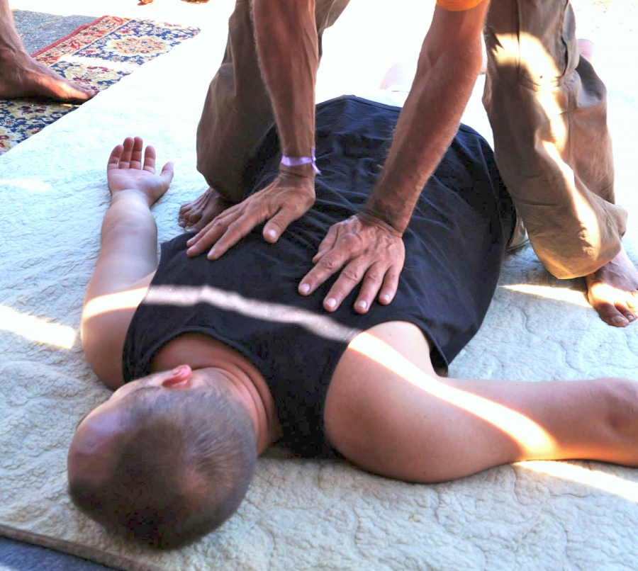

drukuj
drukujSHIATSU - Akupunktura bez igieł
Shiatsu jest sztuką dotyku według zasad starożytnej medycyny orientalnej.
Istotą shiatsu jest empatia.
Celem shiatsu jest harmonizowanie przepływu energii (yin-yang) w naszym organiźmie.
Masaż shiatsu jest skuteczny w bólach kręgosłupa, migrenach, depresjach, zaburzeniach trawiennych, otyłości i wielu innych dolegliwościach, wspomaga również procesy leczenia chorób degeneracyjnych.
Shiatsu pomaga nie tylko Twoim odbiorcom, pomaga również Tobie!
Odkryj swoją wewnętrzną moc.
Współczesne shiatsu, które praktykuję jest metodą holistyczną wywodzącą się ze szkoły mistrza Shizuto Masunagi.
Dzięki shiatsu lepiej poznajemy swoje ciało i poprawiamy ogólną kondycję.
Shiatsu jest dostępne dla wszystkich bez względu na wiek, płeć, zawód i predyspozycje!
Każdy z Was może nauczyć się tej prostej i skutecznej metody.
Zapraszam na warsztaty i sesje indywidualne.
Możesz zorganizować warsztat w swoim mieście!
Nawet u siebie w mieszkaniu, jeżeli jest wystarczająca przestrzeń.
Jestem otwarty na propozycje i lubię podróże :)
Andrzej Turczynowicz
